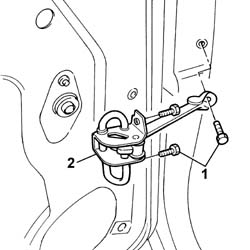

7010A28 rear side door opening limiter-r r
- Path
- Procedures > 70 FITTINGS > 7010 PASSENGER COMPARTMENT REAR SIDE DOORS > 7010A rear side door assembly > 7010A28 rear side door opening limiter-r r
- Kind
- repair procedure (removal / refitting; the operation number is the code)
- Applies to
- all engines; all production periods
- Interactive page
- https://sloeber94.github.io/elrnDB-fPnd/en/#/2753088
Applies to: all engines; all production periods
 Removing
Removing
 Refitting
RefittingDisconnect the battery negative terminal.
7010D38 rear side door manual window mechanism handle/ring-nut r r
7010C44 interior handle panel - r r
7010E10 rear side door inner panel - r r or replace
5570T93 REAR SIDE LOUDSPEAKER. (one), left or right - R.R. with rear door panel or wing. removed
7010A04 rear side door water guard protection - r r or arrange with door panel removed
1. Undo the retaining bolts.
2. Working from the loudspeaker compartment, remove the door check strap.

Applies to: all engines; all production periods
Refitting
RemovingFit the door check strap in its seating and tighten the fixing bolts to the specified torque.
 | Fastening | Component | Ø | Value (daNm) |
|---|---|---|---|---|
- | Bolt | REAR DOOR OPENING LIMITER | M6 | (Door side) 1.2 |
| Fastening | Component | Ø | Value (daNm) |
|---|---|---|---|---|
- | Bolt | REAR DOOR OPENING LIMITER | M8 | (Bodyshell side) 2.5 |
7010A04 rear side door water guard protection - r r or arrange with door panel removed
5570T93 REAR SIDE LOUDSPEAKER. (one), left or right - R.R. with rear door panel or wing. removed
7010E10 rear side door inner panel - r r or replace
7010C44 interior handle panel - r r
7010D38 rear side door manual window mechanism handle/ring-nut r r
Connect the battery negative terminal.
Topics linked from this page (5)
- 5570T93 REAR SIDE LOUDSPEAKER. (one), left or right - R.R. with rear door panel or wing. removed
- 7010A04 rear side door water guard protection - r r or arrange with door panel removed
- 7010C44 interior handle panel - r r
- 7010D38 rear side door manual window mechanism handle/ring-nut r r
- 7010E10 rear side door inner panel - r r or replace